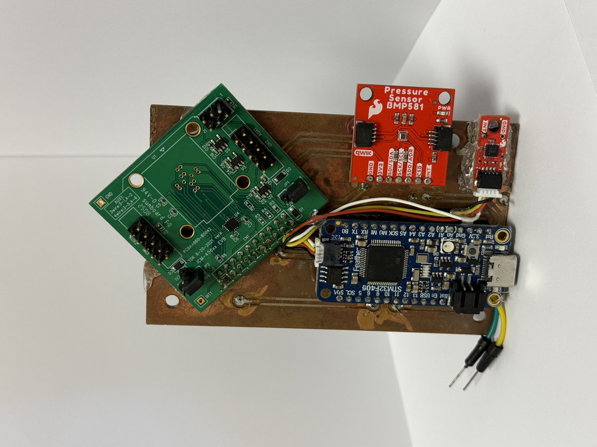
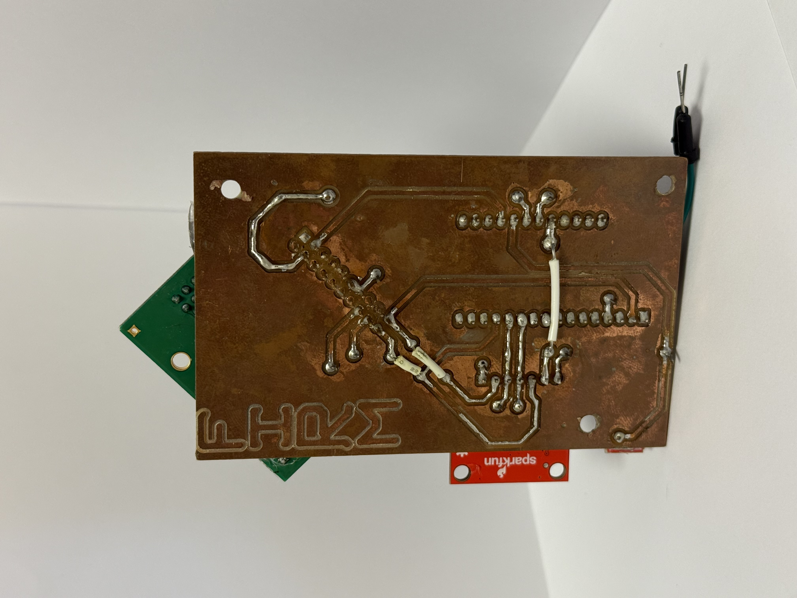
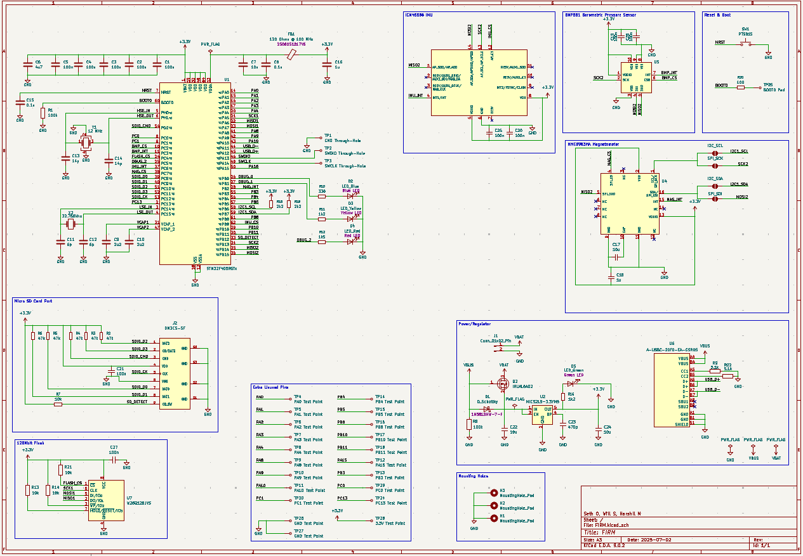
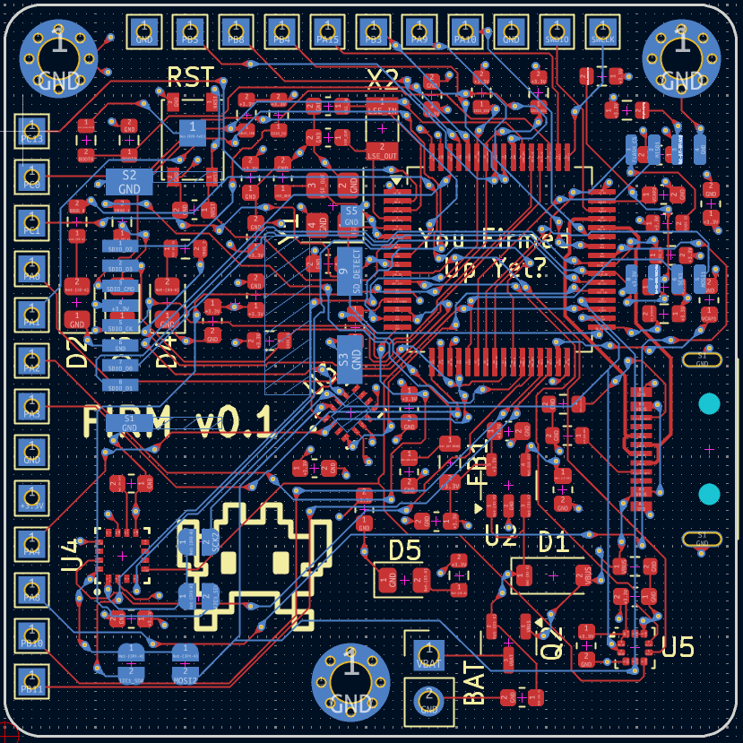
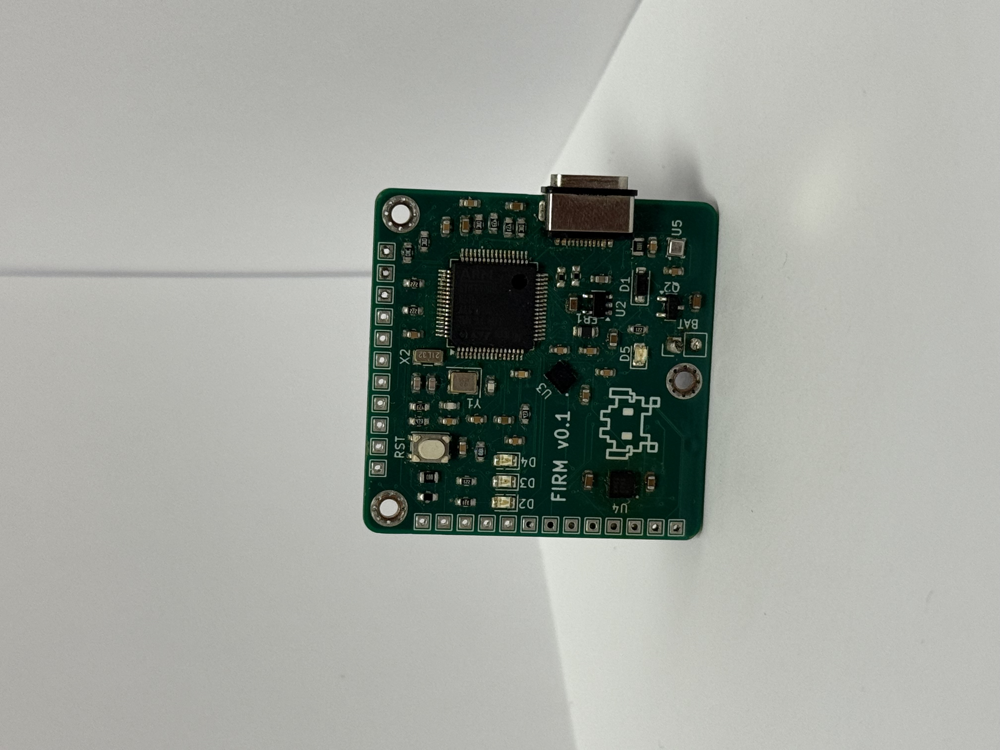
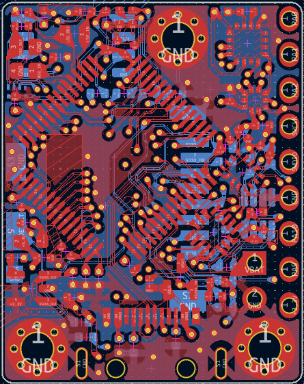
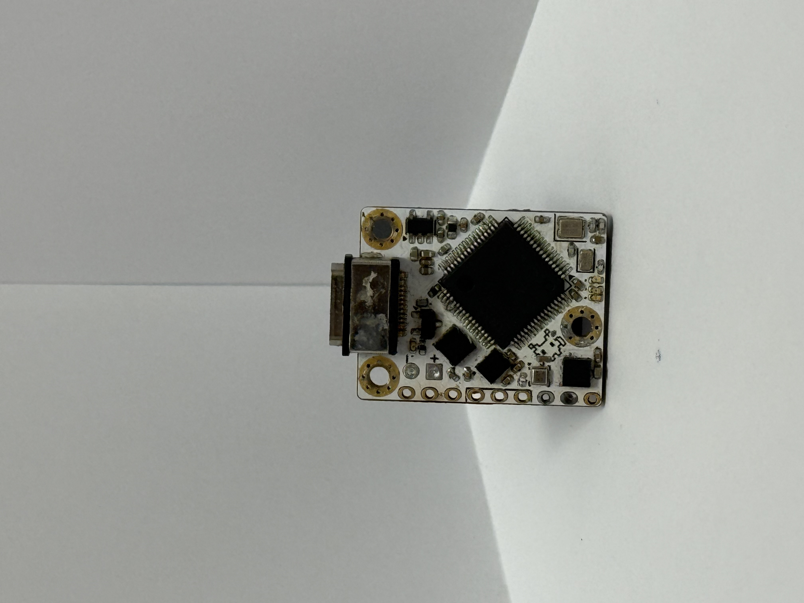

Filtered Inertial Rotation Module (FIRM)
FIRM is a custom PCB flight computer that I researched, designed, and developed over the span of 9 months. FIRM was designed to collect all the essential data of a rocket launch, including: acceleration, gyro, magnetic fields, pressure, and temperature. The idea originated from a close call with a $1400 IMU, therefore FIRM was born to be cost effective alternative.
Copper Milled FIRM



What I did
After reasearching/selecting the microcontroller and sensors for the project, breakout boards were order for each component to ensure all communication protocols performed well. To do this, I used KiCAD to design the schematic and traces paths required to connect the sensors to the STM32. This allow me to properly route the power system and SPI/I2C protocols without any messy wires. The gerber files from the completed design were uploaded to the Othermill PCB Maker for manufacturing. Lastly, the breakout boards were soldered to the board, code was flashed to the STM32, and data collection was tested.
What I learned
This version taught me to keep in mind the manufacturing capabilities available. For this project that includes, ensuring that the drill bit from the PCB mill can fit cut around a trace without interfereing with another one. This taught me to properly space out traces to allow the drill bit to properly cut around its outline. From milling the board it taught me the basics of PCBs, including how to utilized multiple layers of signals. While this version worked, the design was bulky, the solder was messy, and the signal integrity of the copper plate could be improved. The next iteration would need to include SMD components and be manufactured by a company with the appropriate machines.
FIRM v0.1



What I did
For Firm v0.1 all compenents became SMD. This allowed me to put aside the breakout boards and reduce the size of the board. I started by importing all the symbols/footprints of the components and made custom symbols/footprints for the ones not already in the KiCAD library. The next step was to add passive components and the power supply. The voltage regulator steped down the input voltage to 3.3V and a spilt rail with a ferite bead was used to provide analog power. To recieve power, the STM32 and sensors were given decoupling capacitors to prevent browning out due to voltage fluctuations. The STM32 was given specified crystal ocsilators to provided timing, and extra capacitors were used to reduce internal voltage fluctuations. After setting up the essentials for the STM32, the sensors were connected to the STM32 using SPI protocol. A flash chip and MicroSD card were connected as well to provide storage for data logging. Once the schematic was completed, the board traces were layed out on a four layer board, and was sent to JLCPCB for manufacturing. Finally, the SMD components were soldered to the completed boards using a pick-and-place machine and checks were done to insure there were no shorts on the board.
What I learned
This design process taught me how to:
- Make custom symbols and footprints
- Use SPI, I2C, and UART
- Layout a schematics
- Layout traces
- Use a pick-and-place machine
- Test for shorts
- Configure STM32 components
FIRM v1



What I did
Describe the final design and what you changed.
Final result
How it performed, what you would do differently, and what you took away from the project.